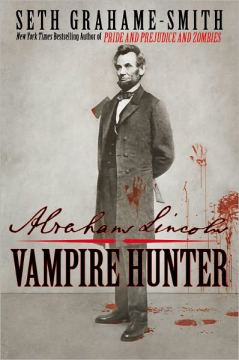
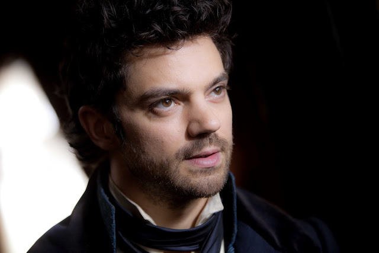
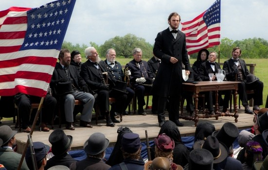
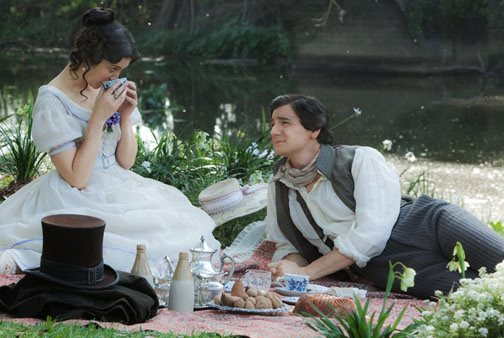

|
There is no historical evidence that vampires had any involvement with the Confederate
army at the Battle of Gettysburg. Or, in fact, any other aspect of Abraham Lincoln's life.
Nor is it likely that Lincoln wielded his rail splittin' axe-shotgun combo in ninja-like
fashion to kill said vampires. And Lincoln certainly did not race along the roof of a
Gettysburg-bound train careening downwards off a burning bridge collapsing a thousand feet
into a chasm in the middle of the night. The flagrant lack of historical accuracy in
Abraham Lincoln: Vampire Hunter should be obvious from the title alone. It's safe
to say the film's creators never intended for it to be considered an accurate historical
portrayal. Nevertheless, sporadically throughout the film, on certain points and themes,
the movie does touch accurately on history.
Perhaps as a broad metaphor for the struggles Lincoln led the United States through in
the mid-1800s, the movie gets it right. The leaders of the plantation-based slave
|

The cover of Abraham Lincoln: Vampire Hunter
|
dependent economy of the Southern states, represented by vampires in the movie, fought
ferociously for four years to stop the armies of the industrial, free-labor dependent
economy of Lincoln's Northern states. The Southern states wanted to protect and preserve
their rights, including the centuries old practice of the enslavement of black people. The
"peculiar institution" of slavery was so lucrative at the start of the war that the value
of all slaves in the United States was worth more then all the factories and railroads
combined.
Lincoln grew to oppose slavery as it was fundamentally against the founding principals
of the United States. In history, he and the Union fought the Confederacy. In the movie,
he also battles vampires who rely on the slave population as its food supply and want to
create a nation of their own.
As in the opening sequence, a young Lincoln did in fact encounter slaves for the first
time on a river, though the bloodsucker he witnessed selling them was strictly
metaphorical. Regardless, Lincoln's first experience witnessing the brutality of the
enslavement of black people made a deep and lasting impression. As in the movie, Lincoln's
real family opposed slavery and this certainly affected his views as a boy. His mother,
Nancy Hanks, did in fact die when Lincoln was only nine, though it was not from the bite
of a slave-owning vampire but rather from milk sickness--caused by drinking milk from cows
who had eaten the poisonous white snakeroot. Vampire or milk sickness, the death of his
mother profoundly effected Lincoln for the remainder of his life.
The film is also true to Lincoln's desire to rise in life. The real Lincoln was
ambitious, working his way upwards from being a store attendant, to becoming a lawyer, and
eventually entering politics. This was not spurred by the teaching of a drunk, whoring,
opium-using vampire named Henry Sturges--who certainly would not have been able to show a
young Lincoln a photograph of a slave family in 1837. (The first photograph of a person--a
|

Henry Sturges (Dominic Cooper) serves as young Abe Lincoln's
mentor in the movie.
|
daguerreotype--was made in 1838 in Paris. It was unlikely a photograph of any kind would
have made it to an Illinois frontier town.) Certainly no photographs of slaves would come
until decades later. Similarly the abundant styles of sunglasses preferred by vampires is
anachronistic, as sunglasses didn't really come into wide use until the next century.
Lincoln met Mary Todd and, perhaps buoyed by the shared loss of their mothers at a
young age, had--though some historians disagree fervently--a loving relationship that
produced four sons. Though she is often remembered as a crazy First Lady with a massive
shopping fetish who ended up in an asylum, the beautiful young Mary Todd was in fact quite
a catch for the rough-hewn, plain-looking Lincoln. The film captures this relationship in
a line by Mary Todd that is sometimes attributed to Lincoln himself: "God must have loved
the common people, he made so many of them."
As in the movie, Lincoln did travel down the Mississippi to New Orleans by flatboat,
encountering slaves there, though there is no record of him visiting a spooky plantation
called Eden inhabited by a vampire leader named Adam. It is also certain that Lincoln did
not get in a massive fight with multiple vampires, including a vampiress clad in skin
tight pants possessing flying chair wielding skills that any professional wrestler would
be envious of.
As Lincoln's political career takes off in the movie, he leaves behind his axe and
unsheathes his more potent gift for words. Certainly no American president made better use
of language to expand freedom then Abraham Lincoln. It led him to the White House, where
he and Mary lost their son Willie to typhoid fever--not a vampire bite. Soon after the
Civil War broke out, Lincoln issued the Emancipation Proclamation, freeing slaves in the
Confederacy and inspiring even greater loathing by both historic plantation owners and the
movie's vampire powers.
The climax of the movie comes at the Battle of Gettysburg. In history, the Confederate
army invaded northern territory in 1863. In part, the Confederacy hoped that a convincing
victory would lead to recognition by European leaders. In the movie, before the battle is
|

Abraham Lincoln (Benjamin Walker) delivers the Gettysburg Address in
Abraham Lincoln: Vampire Hunter.
|
fought, the Confederate president Jefferson Davis earns support from the lead vampire, who
sends bloodsuckers disguised as grey-clad rebel soldiers to attack the Union positions on
the ridges and hills around the south central Pennsylvanian town. In both history and the
movie, the Confederates win the first day of the battle. In both history and the movie,
Lincoln is deeply concerned with the events in Gettysburg. Though Lincoln's ordering the
requisition of all the silver in the movie is completely unfounded in history, it does
illustrate the North's vastly superior industrial infrastructure. And in could also be
construed as emblematic of the 16th President's unprecedented use of Federal authority.
Lincoln did take a train to Gettysburg, but in reality, it was not until four months
after the battle that he famously visited to dedicate a soldiers' cemetery. In the movie,
he hurries northward to aid the Union cause during the battle, slaying vampires on the
roof of the speeding train. The film's William Johnson, an African-American friend from
Lincoln's childhood, is nearly as adept as the Great Emancipator at killing the undead. In
real life, Johnson was Lincoln's servant and quite likely in the room with Lincoln when he
finished the final words of his speech calling for "a new birth of freedom." During that
trip to Gettysburg, both Lincoln and Johnson contracted the small pox virus. Lincoln
recovered, but Johnson died. Lincoln arranged for him to be buried in the national
cemetery at Arlington, an exceedingly rare occurrence for a black person in the 1860s.
Johnson's headstone was inscribed with one word: "Citizen."
In both fact and fiction, the Union won the Battle of Gettysburg. However, it was the
Union army's strong defensive position, fierce fighting, and poor choices by Confederate
commanders that were primarily responsible for the outcome at Gettysburg, considered the
turning point of the Civil War. In the movie, the massive amounts of silver arms are
transported to Gettysburg by Mary Todd Lincoln and African-Americans via the Underground
|

Abraham and Mary Todd Lincoln (Walker and Mary Elizabeth Winstead)
|
Railroad. In fact, the Gettysburg area, which borders the Mason-Dixon line and the slave
state of Maryland, did have an active Underground Railroad network helping slaves escape
bondage. The freshly forged bayonets, bullets, and other arms of sterling silver spur the
Union army to victory over the vampire-backed Confederates.
At least the portrayal of Lincoln's Gettysburg Address is largely accurate. Even the
crowded hilltop and fading fall colors on the distant trees are appropriate--something
often missed by historical documentaries. The famous words he speaks are straight from
Lincoln's pen: "Four score and seven years ago ... that this nation, under God, shall have a
new birth of freedom--and that government of the people, by the people, for the people,
shall not perish from the earth." And just as Lincoln said "the world will little note,
nor long remember" the words he spoke, he certainly had no idea that 149 years later,
giant projected digital electronic moving pictures would show him killing CG-enhanced
vampires.
During the closing credits, as names of contributors to the film fade in and out, blood
trickles in thin streams across parchment ultimately revealing the outline of the United
States, a simple, powerful visual metaphor of Gettysburg, the Civil War, and the turbulent
times of Abraham Lincoln.
Source: Jake Boritt and Gabor Boritt for ew.com (June 26, 2012).
|